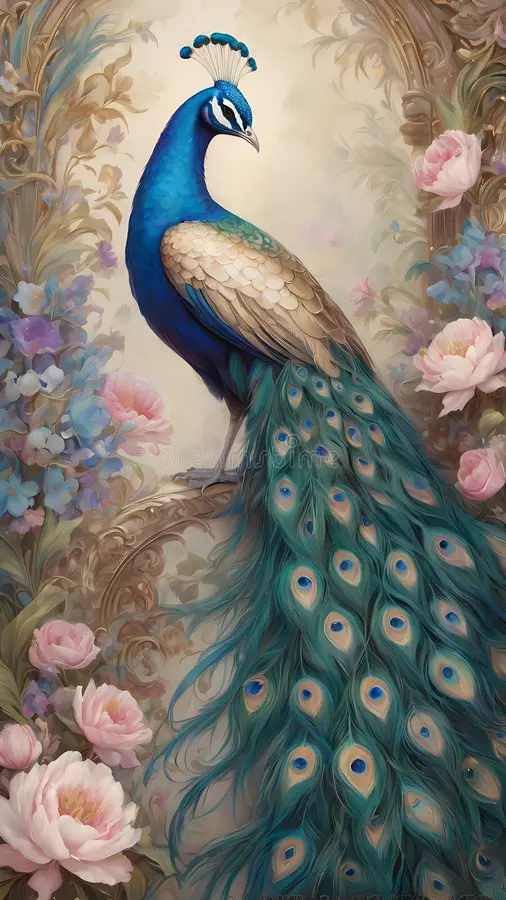

Peacock
February 19, 2025
Peacocks are resplendent birds of the pheasant family. The main body of the Peacock is bluish green in color, and they have a long and slender body with a long face that has black and white colors on it
Read more...February 19, 2025
Peacocks are resplendent birds of the pheasant family. The main body of the Peacock is bluish green in color, and they have a long and slender body with a long face that has black and white colors on it
Read more...
February 18, 2025
There are more than 300 species in the family. They usually make nests of sticks, and their two white eggs are incubated by both the male and the female parent. Doves feed on seeds, fruit and plants. Unlike most other birds, the doves and pigeons produce a type of milk.
Read more...